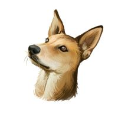

The Indian pariah dog, also known as the Indian native dog or INDog, South Asian pye dog and Desi Kutta, is a landrace of dog native to the Indian subcontinent. They have erect ears, a wedge-shaped head, and a curved tail. It is easily trainable and often used as a guard dog and police dog. This dog is an example of an ancient group of dogs known as pye-dogs. It is possible that the ancestry of this dog dates back 4,500 years.
Though most street dogs in the Indian subcontinent are in fact Indian pye-dogs, the names for this breed are often erroneously used to refer to all urban South Asian stray dogs despite the fact that some free-ranging dogs in the Indian subcontinent do not match the "pariah type" and may not be pure indigenous dogs but mixed breeds, especially around locations where European colonists historically settled in India, due to admixtures with European dog breeds
Back to home